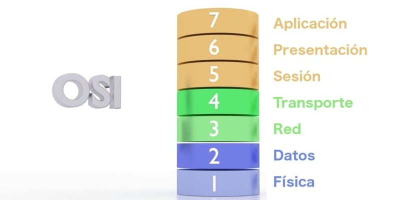

Capas del modelo OSI
Capa física: La capa más baja del modelo, se encarga de la topología de red y las conexiones globales entre la computadora y la red, refiriéndose tanto al medio físico como a la manera en que la información se transmite. Cumple con las funciones de especificar la información sobre el medio físico (tipos de cable, microondas, etc.), definir la información sobre la tensión eléctrica de la transmisión, las características funcionales de la interfaz de red y garantizar la existencia de una conexión (aunque no la fiabilidad de la misma). Capa de enlace de datos: Se ocupa del redireccionamiento físico, detección de errores, acceso al medio y control del flujo durante la comunicación, siendo parte de la creación de protocolos básicos para regular la conexión entre los sistemas informáticos. Capa de red: Es la capa que se encarga de la identificación del enrutamiento existente entre las redes involucradas, así, las unidades de datos pasan a denominarse “paquetes” y pueden clasificarse conforme al protocolo de enrutamiento o protocolo enrutable que utilizan. Los primeros seleccionan las rutas (RIP, IGRP, EIGRP, entre otras) y los segundos viajan con los paquetes (IP, IPX, APPLETALK, etc.). El objetivo de esta capa es garantizar que los datos lleguen a su destino, incluso si ello implica utilizar dispositivos intermedios, como encaminadores o enrutadores. Capa de transporte: Aquí es donde se realiza el transporte de los datos que se hallan dentro de cada paquete, de la computadora de origen a la de destino, independientemente del medio físico que se emplee para ello. Su trabajo se da mediante puertos lógicos y da forma a los llamados Sockets IP: Puerto. Capa de sesión: Se encarga de controlar y mantener el vínculo entre las computadoras que intercambian datos, asegurándose de que, una vez establecida la comunicación entre ambos sistemas, el canal de transmisión de datos pueda retomarse en caso de interrumpirse. Estos servicios pueden llegar a ser prescindibles parcial o totalmente, dependiendo del caso.
|
 |
|---|---|
Capa de presentación: Esta capa se ocupa de la representación de la información, o sea, de su traducción, garantizando que los datos recibidos en cualquier extremo de la red sean del todo reconocibles, sin importar el tipo de sistema empleado. Es la primera capa que se ocupa del contenido de la transmisión, en vez del modo en que ésta se establece y se sostiene. Además, permite el cifrado y la codificación de los datos, así como su compresión, su adecuación a la máquina que los recibe (una computadora, una tableta, un celular, etc). Capa de aplicación: Dado que continuamente se desarrollan nuevos protocolos de comunicación, a medida que surgen nuevas aplicaciones, esta última capa define los protocolos que emplean las aplicaciones para el intercambio de datos y les permite acceder a los servicios de cualquiera de las demás capas. Generalmente, todo este proceso es invisible para el usuario, quien rara vez interactúa con el nivel aplicación, sino con programas que interactúan con el nivel aplicación, haciéndoselo menos complejo de lo que realmente es. Las capas del Modelo OSI pueden recordarse a través de la regla mnemotécnica FERTSPA: Física, Enlace de datos, Red, Transporte, Sesión, Presentación y Aplicación. |
|